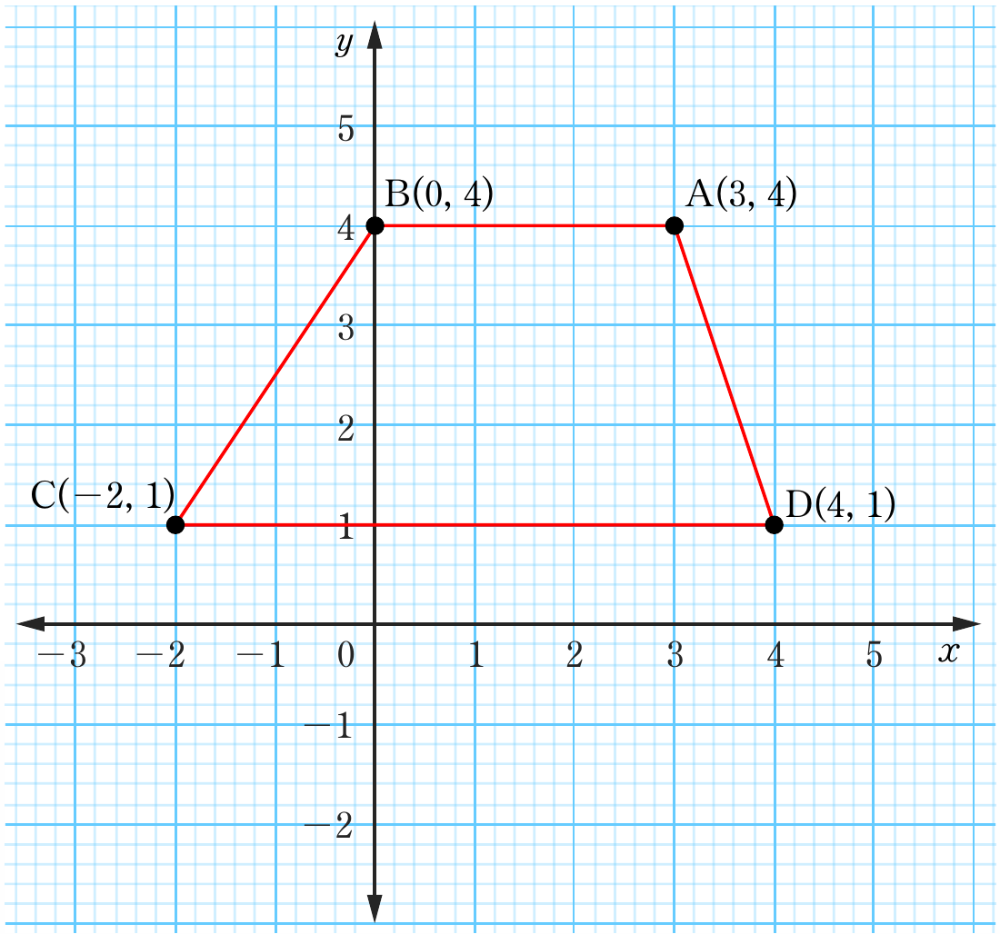
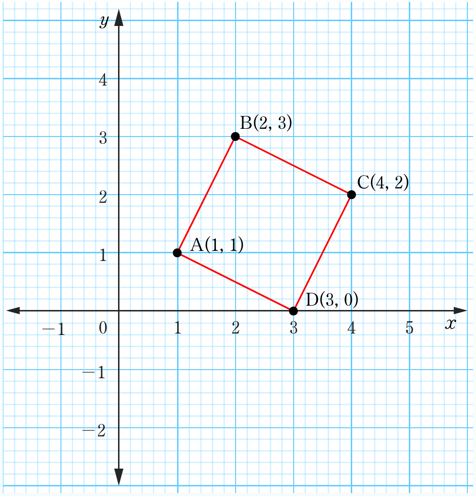

Mathematics for Secondary Schools Student’s Book Form One
(c)

Trapezium
9.(a)

D(3, 0)
Textbook page with two coordinate-plane graphs: the top graph, labeled (c), shows a trapezium with vertices C(-2, 1), B(0, 4), A(3, 4), and D(4, 1); the lower graph, labeled 9(a), shows a quadrilateral with vertices A(1, 1), B(2, 3), C(4, 2), and D(3, 0).